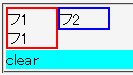
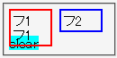

複数のフロートを横に並べているとき、それらの直後にclearプロパティで先行フロートとの隣接を禁止した要素を置くと、その要素のボックスが先行フロートに重なることがある。
<div style="float:left; width:3em; border:2px solid red;">フ1<br>フ1</div> <div style="float:left; width:3em; border:2px solid blue;">フ2</div> <div style="clear:left; background:aqua;">clear</div>
clearプロパティを指定したdiv要素は、前にある2つのフロートよりも下に置かれるはずです。
N7.1での表示
NN4.8での表示
Netscape4は複数のフロートを並べたときに、clearプロパティを「最初のフロート（複数の左フロートが並ぶ場合は左端に置かれるフロート）を除いて最も高さが大きいフロート」にあわせて作用させているようです。従って、最初のフロートの高さの値が最も大きくならないようにすることで重なりを回避することができます。
以下は、2番目のフロートを最も高くする例です。
<div style="float:left; width:3em;">フ1<br>フ1</div> <div style="float:left; width:3em;">フ2<br>フ2<br>フ2</div> <div style="float:left; width:3em;">フ3</div> <div style="clear:left;">clear</div>
NN4.8で不具合の発生を確認しました。